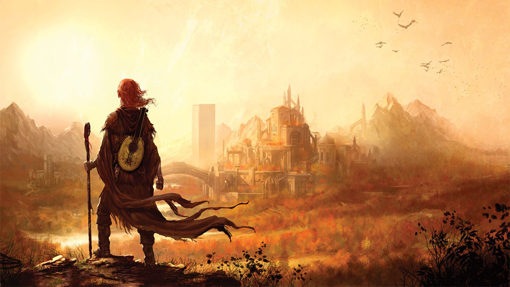

Kvothe, the Kingkiller
"I am Edema Ruh to my bones.
That means my blood is red.
It means I breathe the free air and walk where my feet take me.
I do not cringe and fawn like a dog at a man's title.
That looks like pride to people who have spent their lives cultivating supple spines"
Kvothe is the main character of The Kingkiller Chronicles, written by Patrick Rothfuss. The hero experiences many tragedies from a young age including the loss of his parents, homelessness, and extreme psychological trauma that stems from those experiences. This is the story of the most revered Arcanists in the region.

Notable Locations
- University (seen left)
- Imre (seen right)
- Tarbean
- Faen Realm
Learn more here
Kvothe Wiki